Ajigasawa
Ajigasawa · Aomori
Ajigasawa
Highlighted on the Aomori map.
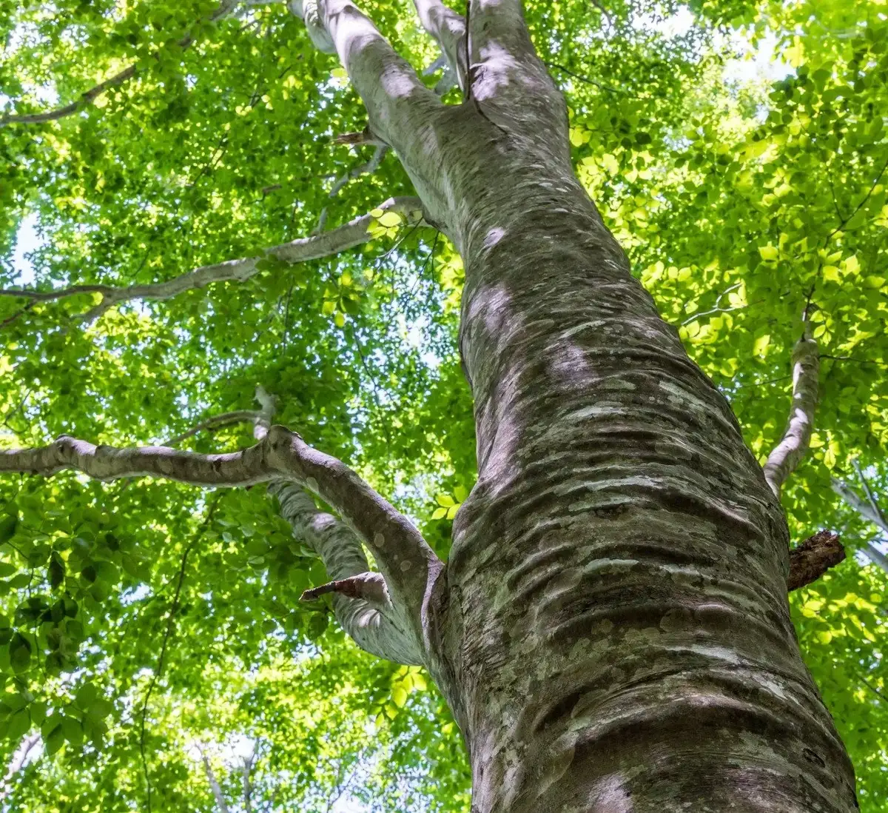
Stay
ホテルグランメール山海荘
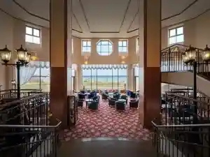
Hoteruguranmeeru Sankai Sou
鰺ヶ沢温泉 水軍の宿
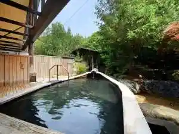
Aji Ke Sawa Onsen Suigun No Yado
ロックウッド・ホテル＆スパ
Rokkuuddo Hoteru & Supa
Dining
児雷也
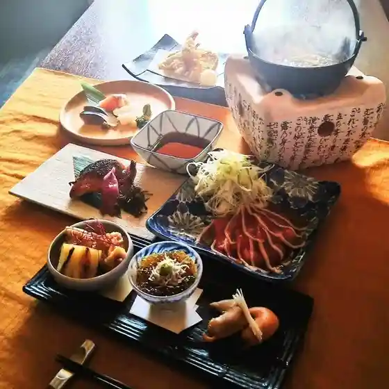
Jiraiya
本舗村上屋
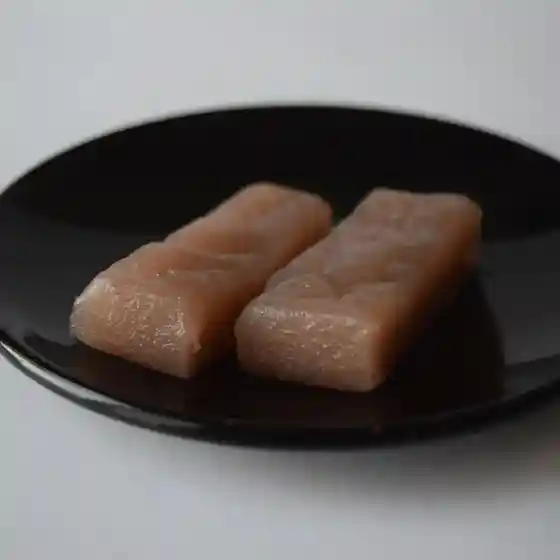
Honpo Murakami Ya
ロックウッド ホテル＆スパ
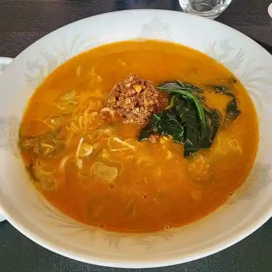
Rokkuuddo Hoteru & Supa
水軍の宿
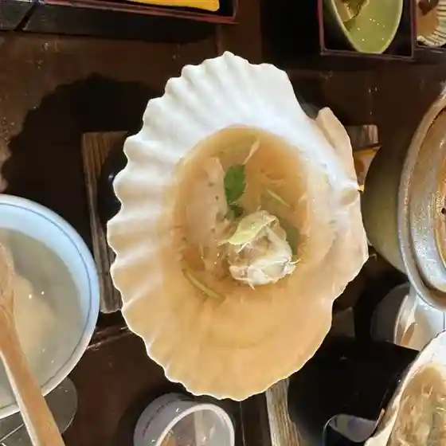
Suigun No Yado
山清
Sansei
網野仕出し店
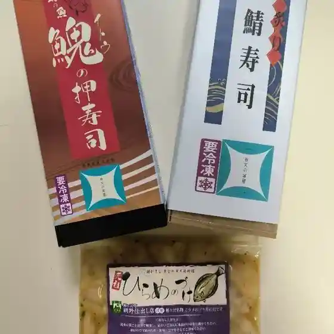
Amino Shidashi Mise
ファミリーマート 鯵ヶ沢バイパス店
Famiriimaato Aji Ke Sawa Baipasu Mise
K2マート
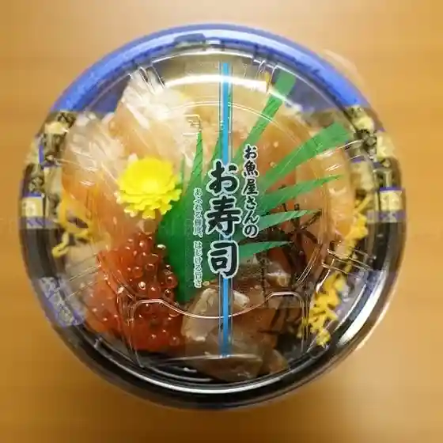
K2 Maato
グランメール山海荘
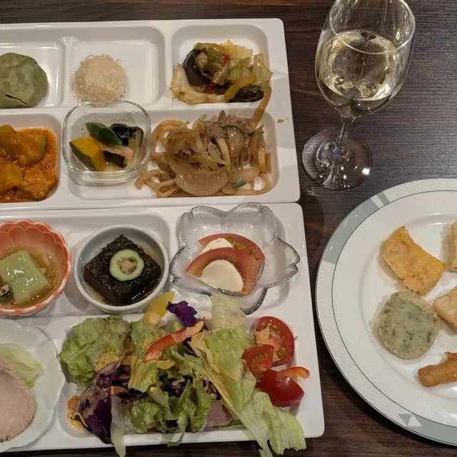
Guranmeeru Sankai Sou
膳所 のれそれ
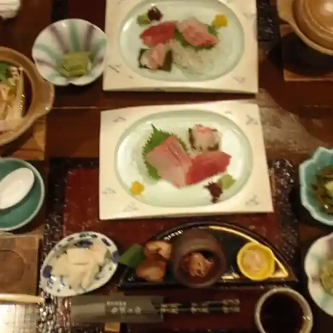
Zeze Noresore
赤羽屋 磯辺商店
Akabane Ya Isobe Shouten
たきわ
Takiwa
キッチンまでにぃ
Kitchin Madenii
カフェ ド アズマ
Kafe Do Azuma
焼肉レストラン 一心亭 鰺ヶ沢店
Yakiniku Resutoran Isshin Tei Aji Ke Sawa Mise
ローリエ
Roorie
らーめん寛
Raamen Hiroshi
らーめん鰺丸 はまなす店
Raamen Aji Maru Hamanasu Mise
食事処 太陽
Shokuji Tokoro Taiyou
菊谷商店
Kikuya Shouten
割烹 水天閣
Kappou Suiten Kaku
居酒屋 良治
Izakaya Ryouji
おやつショップ かわちゃん
Oyatsu Shoppu Kawachan
そば処 濱勢
Soba Tokoro Hama Sei
Sights
World Heritage Site, Shirakami Sanchi
Shirakami Sanchi is a general term used to refer to the massive 130,000ha (501 square miles) mountainous land extended over Aomori and Akita prefecture.
Uminoeki Wando
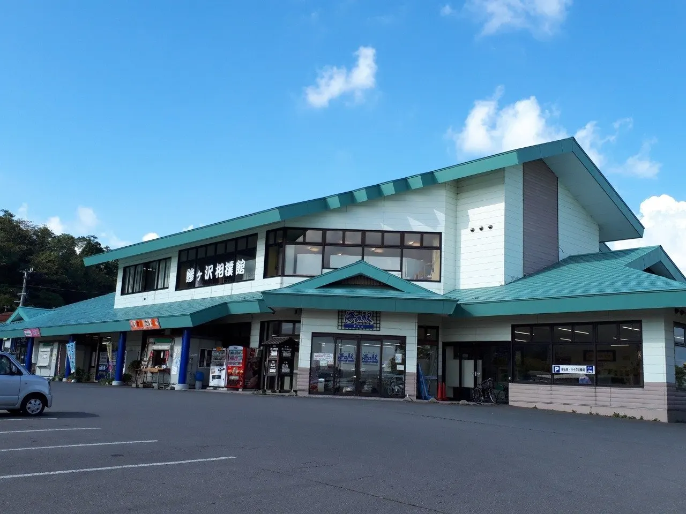
Sightseeing facility with a rich selection of locally made goods and seasonal ingredients
Canola-Blossom Fields at the Foot of Mount Iwaki
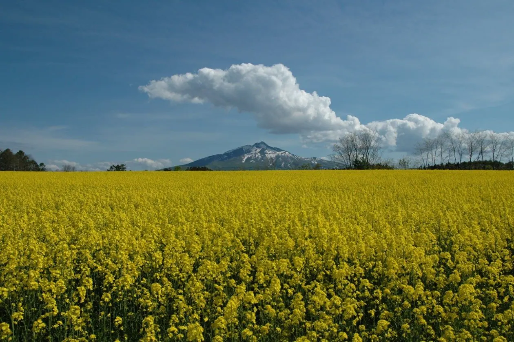
At the base of the majestic Mount Iwaki, fields of beautiful, brightly colored canola blossoms stretch as far as the eye can see.
Odakayama General Park
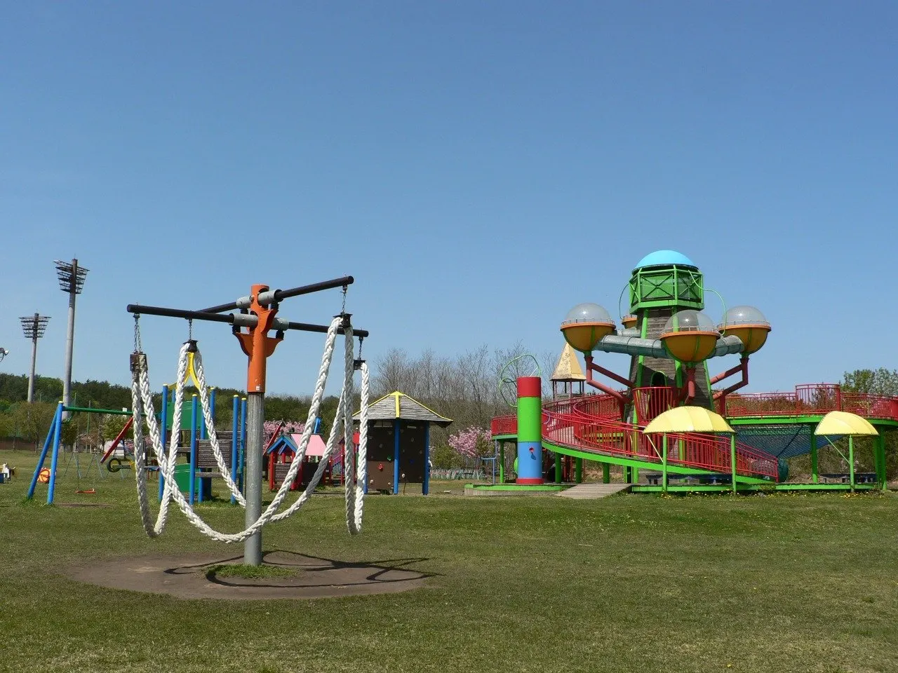
Town park in Ajigasawa's Maito district with sports fields, tennis courts, go-karts and play equipment.
Kurokuma Falls
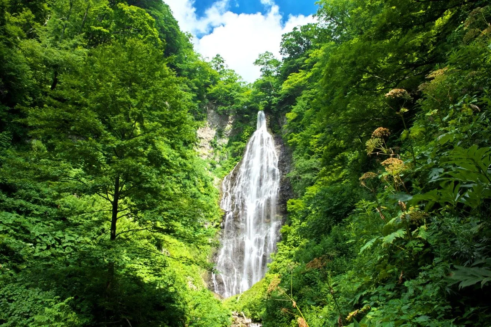
One of the largest waterfalls in Aomori, 85 m high and 15 m wide, on a tributary of the Akaishi River.
Aomori Spring Ski Resort (Formerly Naqua Shirakami Ski Resort)
Aomori Spring Ski Resort (Formerly Naqua Shirakami Ski Resort) is located on the northern side of Mt.
Shirakami Forest Trail (Shirakami no Mori Yuzando)
Trekking course in Ajigasawa's Kuromori area through about 52 hectares of near-untouched beech forest south of the Shirakami-Sanchi World Heritage area.
Akaishi Gorge (Prefectural Natural Park)
One of Aomori's most scenic gorges, carved by the Akaishi River flowing out of the Shirakami Mountains.
Ajigasawa Beach
Shallow sandy swimming beach about a 5-minute walk from JR Ajigasawa Station on the Gono Line.
Ajigasawa Town Ekimae Tourist Information Center
Tourist information inside JR Ajigasawa Station with sightseeing, transport and dining advice and Gono Line brochures.